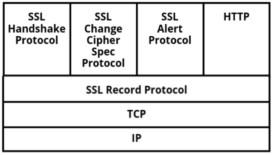

Application Layer Security
- Imagine you’re sending an important email, making an online payment, or logging into your favorite
social media site. Ever wondered what keeps your sensitive information safe from hackers? That’s
where Application Layer Security comes in!
- The application layer is the topmost layer in a network, handling how users interact with
applications like web browsers, email clients, and online banking systems. But since this is where
data is entered, sent, and received, it’s also the layer most exposed to cyber threats like
phishing, data theft, and man-in-the-middle attacks.
- To keep this layer secure, different security mechanisms and protocols are used:
- Secure Electronic Transaction (SET) helps protect online payments and credit card
transactions.
- Email security protocols like PGP (Pretty Good Privacy) and S/MIME encrypt emails to keep
them private and authentic.
- Countermeasures against threats ensure that sensitive information is protected from
unauthorized access.
- By implementing strong security measures at the application layer, we can protect our data from
cyberattacks, ensuring safe and trustworthy online interactions.
Countermeasures to Mitigate Security Risks
Ab jab humein pata chal gaya hai ki application layer mein kaun-kaun se common security threats hote
hain,
to chalo ab baat karte hain ki in problems se kaise bacha jaa sakta hai.
Countermeasures matlab wo safety steps jo hum lete hain taaki cyberattacks ke risk ko kam ya khatam
kiya jaa sake.
- Input Validation and Sanitization:
Yeh ensure karta hai ki users sirf sahi type ka data hi input karein.
Isse harmful inputs jaise SQL injection ya Cross-Site Scripting (XSS) block ho jaate hain.
- Authentication and Authorization:
Authentication ka matlab hota hai user ki identity verify karna, aur authorization ensure karta
hai
ki user sirf unhi cheezon tak access kare jo uske liye allowed hain.
- Secure Communication Protocols:
HTTPS jaise protocols data ko encrypt karte hain taaki attackers passwords ya credit card jaise
sensitive info ko beech mein na pakad saken.
- Regular Patching and Updates:
Software ko updated rakhna important hota hai, kyunki naye updates mein purani
vulnerabilities fix hoti hain. Isse attackers ke attack ka risk kam ho jaata hai.
- Firewalls and Intrusion Detection Systems (IDS):
Firewalls unauthorized access ko block karte hain, aur IDS suspicious activity detect karke
alert bhejta hai. Isse breach hone se bachav hota hai.
- Security Training for Users:
Users ko train karna bhi zaroori hota hai jaise phishing emails ko pehchaanna ya malware se
bachna.
Aise awareness se kaafi attacks roke ja sakte hain.
- Secure Software Development Lifecycle (SDLC):
Jab software develop kiya jaa raha ho, tabhi se security ka dhyan rakha jaaye.
Har stage pe application ko test kiya jaata hai vulnerabilities ke liye.
Countermeasures to Mitigate Security Risks
Ab jab humein pata chal gaya hai ki application layer mein kaun-kaun se common security threats hote
hain,
to chalo ab baat karte hain ki in problems se kaise bacha jaa sakta hai.
Countermeasures matlab wo safety steps jo hum lete hain taaki cyberattacks ke risk ko kam ya khatam
kiya jaa sake.
- Input Validation and Sanitization:
Yeh ensure karta hai ki users sirf sahi type ka data hi input karein.
Isse harmful inputs jaise SQL injection ya Cross-Site Scripting (XSS) block ho jaate hain.
- Authentication and Authorization:
Authentication ka matlab hota hai user ki identity verify karna, aur authorization ensure karta
hai
ki user sirf unhi cheezon tak access kare jo uske liye allowed hain.
- Secure Communication Protocols:
HTTPS jaise protocols data ko encrypt karte hain taaki attackers passwords ya credit card jaise
sensitive info ko beech mein na pakad saken.
- Regular Patching and Updates:
Software ko updated rakhna important hota hai, kyunki naye updates mein purani
vulnerabilities fix hoti hain. Isse attackers ke attack ka risk kam ho jaata hai.
- Firewalls and Intrusion Detection Systems (IDS):
Firewalls unauthorized access ko block karte hain, aur IDS suspicious activity detect karke
alert bhejta hai. Isse breach hone se bachav hota hai.
- Security Training for Users:
Users ko train karna bhi zaroori hota hai jaise phishing emails ko pehchaanna ya malware se
bachna.
Aise awareness se kaafi attacks roke ja sakte hain.
- Secure Software Development Lifecycle (SDLC):
Jab software develop kiya jaa raha ho, tabhi se security ka dhyan rakha jaaye.
Har stage pe application ko test kiya jaata hai vulnerabilities ke liye.
SET (Secure Electronic Transaction)
- Jab aap online shopping site pe apne credit card details daalte ho, kya kabhi socha hai ki ye
details safe kaise rehti hain?
Kya ho agar koi aapke payment info ko beech mein hi pakad le? Bas wahi kaam SET karta hai –
aapki payment ko safe rakhna!
- SET ek security protocol hai jo specifically online credit card transactions ko secure karne ke
liye banaya gaya tha.
Kyunki online payments mostly web apps ke through hoti hain, ye network ke application layer pe
kaam karti hain.
Ye wahi layer hai jahan hum email, browser aur online services use karte hain – isi wajah se
yahan cyber attacks ka risk zyada hota hai.
Agar ye layer secure na ho, to hackers card details, passwords aur personal info chura sakte
hain.
- In sab threats se bachne ke liye, SET ensure karta hai ki jab tak payment transmit ho raha ho,
tab tak wo encrypted aur secure rahe.
Ye kaise karta hai? Dekho:
- Encryption – Payment details ko aise secure karta hai ki sirf authorized log hi padh
sakein.
- Authentication – Buyer aur seller dono ki identity verify karta hai fraud se bachne ke
liye.
- Digital Signatures – Make sure karta hai ki transaction beech mein chhed-chaad na ho.
- SET ko application layer pe implement karke, hum financial transactions ko directly source pe
secure kar sakte hain.
Isse hackers aapka sensitive payment data pakad nahi paate. Haan, SET thoda complex tha isliye
zyada use nahi hua,
lekin uske jo security principles the – wo aaj bhi 3D Secure (Visa, Mastercard), PayPal
encryption, aur banking protocols mein use ho rahe hain.
How SET Ensures Secure Transactions
Ab jab humein pata chal gaya ki SET (Secure Electronic Transaction) online credit card payments ko
secure karta hai,
to chalo dekhte hain ki ye actually kaise kaam karta hai. Simple encryption se zyada powerful, SET
ek multi-layered security approach use karta hai
jisse transaction private, asli (authentic), aur secure rehta hai.
Yeh hai SET ka kaam karne ka tareeka:
- Payment Information ka Encryption:
- Jab aap apne credit card details daalte ho, SET unko encrypt kar deta hai,
taaki na merchant aur na koi aur unhe padh sake.
- Sirf aapka bank ya payment processor hi payment ko decrypt karke process kar sakta hai.
- Authentication ke liye Digital Certificates:
- Buyer aur seller dono ke paas ek digital certificate hota hai jo trusted authority
(jaise Visa ya Mastercard) se mila hota hai.
- Isse ye confirm hota hai ki dono parties asli hain, aur fraud hone ka chance kam ho
jaata hai.
- Data Integrity ke liye Dual Signature:
- SET ek dual signature system use karta hai, jiska matlab:
- Merchant ko sirf order details dikhte hain (payment info nahi).
- Bank ko sirf payment details dikhte hain (aapne kya kharida ye nahi).
- Isse aapka financial data private rehta hai, aur transaction secure hota hai.
- Sabhi Parties ka Authentication:
- SET transaction shuru hone se pehle sabhi users ki identity verify karta hai.
- Isse unauthorized log koi fraud purchase nahi kar sakte.
- Replay Attacks ka Prevention:
- SET ensure karta hai ki har transaction unique ho, aur attackers usko dobara use na kar
paayein.
- Isse hackers aapki payment request ko copy karke phir se bhej nahi sakte.
Ye saare steps milke SET ko ek strong security system banate hain online payments ke liye.
Aaj bhale hi SET khud zyada use nahi hota, lekin uske security ideas modern systems mein base ka
kaam karte hain.
Applications and Use Cases of SET
SET ko specifically secure online transactions ke liye banaya gaya tha, aur haan, thoda complex hone
ki wajah se ye zyada popular nahi hua,
lekin isne aaj ke modern payment security systems ki foundation zarur rakhi. Chalo dekhte hain ki
SET ya uske concepts kahaan use hote hain:
-
E-commerce Websites
- SET secure online shopping ke liye develop kiya gaya tha, taaki credit card transactions
encrypted aur verified rahein.
- Aaj ke platforms jaise Amazon, eBay, aur online banking systems bhi SET ke concepts pe
based security use karte hain.
-
Online Banking & Digital Wallets
- Bohot saare online banking platforms SET jaise encryption aur authentication methods use
karte hain.
- PayPal, Apple Pay, Google Pay jaise services bhi encryption, authentication, aur secure
tokenization use karte hain – jo SET se inspired hain.
-
3D Secure (Visa Secure, Mastercard SecureCode, etc.)
- Modern payment security jaise 3D Secure (Visa, Mastercard, RuPay) multi-factor
authentication aur encryption use karte hain – ye sab SET ke hi core ideas hain.
- Ye methods payment complete hone se pehle user ko verify karte hain.
-
Secure Government and Corporate Transactions
- Government agencies aur financial institutions bhi SET jaisa encryption aur
authentication use karte hain jab sensitive transactions handle karte hain.
Chahe SET globally popular nahi bana, lekin uske encryption, authentication, aur verification methods
aaj ke digital transaction systems ka base ban chuke hain.
Electronic Mail Security
- Emails bhejna toh hum roz ka kaam hai—chahe work ke liye ho, kisi friend se baat karni ho, ya
online shopping ki updates check karni ho. Lekin kabhi socha hai ki yeh emails kitni secure hoti
hain? Kyunki email ek popular communication method hai, cyber criminals bhi isi pe sabse zyada
attack karte hain—jaise phishing, unauthorized access, aur data chura lena.
-
Electronic Mail Security ka matlab hota hai email ke content ko protect karna—taaki woh
confidential rahe, data change na ho (integrity), aur sender ki identity verify ho
(authentication). Agar email secure nahi hoga, toh data leak ho sakta hai, identity chori ho
sakti hai, aur fraud bhi ho sakta hai. Socho agar ek fake bank email aa jaye jo bilkul asli
lage—agar security nahi hogi, toh aap easily uss trap me aa sakte ho.
-
Aise threats se bachne ke liye kuch security protocols aur technologies banayi gayi hain:
- Encryption email ka content secure karta hai, taaki sirf jisko email bhejna hai wahi
usse padh sake.
- Digital Signatures sender ki identity verify karte hain aur yeh confirm karte hain ki
email beech me change nahi hua hai.
- Authentication protocols jaise SPF (Sender Policy Framework) aur DKIM (DomainKeys
Identified Mail) yeh check karte hain ki jo email bhej raha hai, woh wahi banda hai jo
claim kar raha hai.
- Jab emails secure tarike se bheji jaati hain, toh sensitive info unauthorized logon ke haath
nahi lagti. Chalo ab dekhte hain yeh email security protocols kaam kaise karte hain aur kaise
humari emails ko safe banate hain!
Email Security Threats
Jaise baaki online communication tools ke saath risks hote hain, waise hi email bhi apne saath kuch
dangers leke aata hai. Kyunki email personal aur business dono ke liye use hota hai, isliye hackers
isse target karte hain info churaane ya virus spread karne ke liye. Yeh rahe kuch common email
threats:
- Phishing: Socho ek email aata hai jo bank ke naam pe hota hai aur kehta hai ki
account details update karo. Phishing emails aapko bewakoof banane ke liye design kiye jaate
hain taaki aap apna password ya credit card number de do. Yeh emails asli lagte hain, par asli
nahi hote—yeh hackers bhejte hain.
- Malware: Kabhi-kabhi emails ke attachments ya links me malware chhupa hota hai.
Jab aap uspe click karte ho, toh yeh aapke system me virus, ransomware ya spyware daal dete
hain. Isse aapka data churaaya ja sakta hai, files damage ho sakti hain, ya system lock ho sakta
hai.
- Spam: Bina kaam ke unwanted emails, yaani spam, aapke inbox ko bhardete hain.
Kabhi-kabhi inme harmful links bhi hote hain. Har baar spam dangerous nahi hota, par yeh
important emails ko dekhna mushkil bana dete hain.
- Business Email Compromise (BEC): Isme attacker kisi company executive ya
trusted person ka role play karta hai aur employees ko galat emails bhejta hai—jaise paise
transfer karne ke liye kehna ya confidential info maangna. Yeh attacks financially kaafi nuksaan
karwa sakte hain.
- Email Spoofing: Jab hacker email ka “From” address fake bana deta hai taaki woh
kisi friend ya trusted source ka lage, toh usse email spoofing kehte hain. Iska aim hota hai
aapka trust jeetna aur aapse kuch galat kaam karwana—jaise harmful link pe click karwana.
Methods for Securing Emails
Ab jab hume threats ke baare me pata chal gaya, chalo ab baat karte hain ki apne email ko kaise
secure rakhein. Email ka secure hona important hai taaki aapki personal aur sensitive info safe
rahe. Yeh rahe kuch best practices jo aap follow kar sakte ho:
- Use Strong Passwords and Two-Factor Authentication (2FA): Ek strong password
pehla step hai apna email safe rakhne ka. Uske saath 2FA bhi use karo—matlab password ke alawa
ek extra code (usually phone pe aata hai) daalna padta hai. Isse hackers ke liye aapka account
hack karna kaafi mushkil ho jaata hai—even agar unhe aapka password mil bhi jaye.
- Encrypt Your Emails: Jab email encrypted hota hai, toh sirf sender aur receiver
hi message padh sakte hain. Agar koi hacker beech me email pakad bhi le, toh woh uska matlab
samajh nahi paayega. Iske liye PGP (Pretty Good Privacy) ya S/MIME jaise protocols ka use hota
hai.
- Be Cautious with Attachments and Links: Agar kisi unknown ya suspicious email
me attachment ya link ho, toh usse open mat karo. Agar doubt ho, toh sender se alag method se
confirm karlo ki email asli hai ya nahi.
- Spam Filters: Kaafi email providers aise filters provide karte hain jo
suspicious emails ko alag folder me daal dete hain. Isse aapka inbox clean rehta hai aur
phishing jaise scams me phasne ke chances kam ho jaate hain.
- Regular Software Updates: Apna email software aur antivirus programs updated
rakhna bahut important hai. Updates me naye security fixes hote hain jo attackers ke liye
hacking mushkil bana dete hain.
- Use Secure Email Services: Kuch email services jaise ProtonMail aur Tutanota
built-in end-to-end encryption dete hain—iska matlab sirf aap aur recipient hi email padh sakte
ho. Yeh standard email se zyada secure option hai.
Pretty Good Privacy (PGP)
- Jab aap koi important email bhejte ho, jaise job application ya koi confidential business
proposal, toh kaise sure ho sakte ho ki beech mein koi usse padh nahi raha? Yahin pe Pretty Good
Privacy (PGP) kaam aata hai!
- PGP ek popular encryption aur authentication method hai jo emails ki privacy protect karta hai.
Yeh make sure karta hai ki sirf jis bande ko message bhejna hai wahi usse padh sake, aur message
beech mein badla na gaya ho. Iska naam "Pretty Good Privacy" isliye hai kyunki yeh shayad sabse
strong encryption na ho, lekin phir bhi kaafi effective hota hai emails secure rakhne ke liye.
- Simple shabdon mein, PGP aapke emails ko private, asli aur safe banake rakhta hai.
How PGP Works (Encryption and Digital Signatures)
Ab jab humein pata chal gaya ki PGP kya hai, chalo dekhte hain yeh emails aur files ko kaise
protect karta hai.
PGP do cheezein combine karta hai — encryption (jo messages ko private rakhta hai)
aur
digital signatures (jo yeh verify karta hai ki message kisne bheja).
Matlab aapki communication confidential bhi hoti hai aur ched-chaad se bhi safe.
- Encryption in PGP – Apne Message ko Lock Karna Key se:
Socho aap ek sealed letter apne friend ko bhej rahe ho. Aap nahi chahte koi
aur use padhe, isliye aap usse ek box mein lock kar dete ho.
Aur twist yeh hai ki sirf aapke friend ke paas us box ki key hai!
Bilkul aise hi PGP encryption kaam karta hai. Yeh use karta hai ek method
jise kehte hain
public-key cryptography, jismein har user ke paas hoti hain 2
keys:
- Public Key: Yeh ek lock jaisa hota hai, jo koi bhi use
kar sakta hai aapke liye message secure karne ke liye.
- Private Key: Yeh sirf ek hi key hoti hai jo message
unlock kar sakti hai — aur yeh aapke paas secret rehti hai.
Jab aap kisi ko PGP se email bhejte ho:
- Aap us bande ki public key use karke message encrypt karte ho. Socho
jaise aap unke lock se box band kar rahe ho.
- Box lock ho gaya toh usse aap bhi nahi khol sakte.
- Sirf receiver hi apni private key se us message ko
decrypt kar sakta hai.
Isse yeh ensure hota hai ki agar koi hacker email ko intercept bhi kar le,
toh usse sirf bekaar characters dikhenge. Private key ke bina message padhna impossible hai!
- Digital Signatures in PGP – Bhejne Wale Ki Pehchaan:
Encryption se messages private ho jaate hain, lekin kaise pata chale ki message sach mein
sender ka hi hai aur beech mein badla nahi gaya?
Yahin pe digital signatures ka role aata hai.
Socho aapko apne bank se koi important email milti hai. Kaise pata chale ki woh asli hai,
scam nahi?
Ek digital signature ek seal of authenticity jaisa kaam
karta hai — yeh prove karta hai ki message asli sender ne hi bheja hai.
Aise kaam karta hai yeh:
- Email bhejne se pehle, PGP ek unique fingerprint (hash) banata hai
message ka.
- Phir yeh fingerprint ko sender ki private key se encrypt kiya jaata
hai, jisse banta hai ek digital signature.
- Receiver jab email receive karta hai, uska PGP software sender ki public
key se signature check karta hai.
- Agar signature valid hota hai, toh yeh confirm ho jaata hai ki message badla
nahi gaya hai aur asli hai.
Toh encryption message protect karta hai, aur digital signatures
sender verify karte hain. Yeh double-layer protection PGP
ko ek powerful security tool banata hai.
Short mein bolein toh PGP ek locked box with a seal jaisa hai: sirf jis bande ke
liye message hai woh hi use khol sakta hai, aur seal se pata chalta hai ki message ke saath
chhed-chaad nahi hui.
Isi tarah emails, files aur even software updates bhi secure aur trustworthy rehte
hain.
PGP in Practice
Ab jab humein samajh aa gaya ki PGP kaise kaam karta hai, chalo dekhte hain yeh real life
mein kaise use hota hai.
Technical cheezein thodi complex lag sakti hain, lekin aajkal kaafi tools PGP ko automatic
bana dete hain, jisse use karna easy ho jaata hai.
- 1. Secure Email Communication – Messages ko Private Rakhna:
Kaafi log PGP ka use karte hain apne emails encrypt karne ke liye taaki
unki baatein private rahein.
Yeh journalists, activists aur businesses ke liye kaafi useful hota hai jo sensitive info
share karte hain.
Kuch privacy-focused email services jaise ProtonMail aur
Tutanota mein built-in PGP encryption hoti hai.
Toh jab dono users same service use karte hain, messages automatic encrypt aur
decrypt ho jaate hain.
- 2. File Encryption – Sensitive Data ko Safe Rakhna:
PGP sirf emails ke liye nahi hai! Yeh files aur folders encrypt karne ke
liye bhi use hota hai, taaki confidential data safe rahe.
Companies isse use karti hain financial documents, personal records aur backup files secure
rakhne ke liye.
Socho aapne apne saare passwords ek text file mein likh diye. Agar koi us file tak pahunch
gaya, toh aapka data chori ho sakta hai.
Lekin agar aap PGP se us file ko encrypt karte ho, toh sirf aap hi apni
private key se usse khol sakte ho.
- 3. Verifying Software Authenticity – Fake Updates se Bachav:
Kabhi aapne software update download karke socha, "Yeh real hai ya kahin malware toh nahi?"
Hackers fake updates create karte hain jismein virus hota hai.
Is problem se bachne ke liye, developers apne software updates ko PGP
signature se sign karte hain.
Install karne se pehle, users signature verify karke yeh confirm kar sakte
hain ki update genuine aur untouched hai.
Kaafi open-source projects (jaise Linux distributions aur cryptocurrency
wallets) PGP ka use karte hain security ke liye.
- 4. Protecting Sensitive Conversations – Secure Messaging:
Kuch encrypted messaging apps bhi PGP-style encryption use karte hain taaki
conversations safe rahen.
Yeh industries jaise finance, law, aur cybersecurity mein popular hai jahan
privacy important hoti hai.
Jaise whistleblowers often PGP ka use karte hain anonymously journalists se baat
karne ke liye, taaki unke messages safe rahen.
- 5. Using PGP with Keyservers – Apni Public Key Share Karna:
Agar aap chahte ho log aapko encrypted email bhejein, toh unke paas aapki public
key honi chahiye.
Har kisi ko manually bhejne ke bajaye, aap usse ek PGP keyserver pe upload
kar sakte ho.
Keyservers (jaise MIT ka PGP Keyserver) ek tarah ke phone books hote hain
public keys ke liye.
Koi bhi aapka public key search karke aapko encrypted message bhej sakta hai.
Shuru mein PGP thoda complicated lag sakta hai, lekin modern tools ke saath isse use karna easy ho
jaata hai.
Jaise-jaise digital privacy important hoti ja rahi hai, PGP ab bhi emails, files, aur
sensitive data ko secure rakhne ka best way mana jaata hai.
S/MIME (Secure/Multipurpose Internet Mail Extensions)
- Emails ab sirf plain text se kaafi aage badh chuke hain. Aaj kal hum documents, images, audio
aur videos bhi email ke through bhej sakte hain. Lekin starting ke time pe email systems kaafi
basic hote the.
- Us time sirf NVT (Network Virtual Terminal) 7-bit ASCII format mein emails bheje ja
sakte the.
- Iska matlab tha ki images, audio ya video jaise non-text data ko email se bhejna
possible nahi tha.
-
Sab kuch plain text mein hi hona chahiye tha, jo ki kaafi restriction create karta tha.
- Is problem ko solve karne ke liye MIME (Multipurpose Internet Mail Extensions) introduce kiya
gaya.
Isne emails mein attachments, multimedia files aur non-ASCII text ko support karna possible
banaya.
Lekin MIME sirf files attach karne mein madad karta hai, ye security nahi deta.
- Yahin par S/MIME (Secure/MIME) ka role aata hai! Ye MIME pe based hota hai lekin extra security
features add karta hai jaise encryption aur digital signatures,
taaki emails ko secure banaya ja sake — matlab kisi ne email ko beech mein pakad bhi liya toh wo
use change ya read nahi kar payega.
Key Features of S/MIME
S/MIME email ki security ko kaafi strong bana deta hai, mainly do features ke through:
- Encryption – Email ka content secure karna:
- Encryption ye ensure karta hai ki sirf jis bande ke liye email bheja gaya hai, wahi usse
read kar sake. Agar koi hacker beech mein email pakad bhi le, toh bhi usse samajh nahi
aayega.
- S/MIME asymmetric encryption use karta hai, jisme do keys hoti hain:
- Public key (email ko send karne se pehle encrypt karne ke liye).
- Private key (recipient ke paas hoti hai, email ko decrypt karne ke
liye).
- Agar koi transmission ke time email ko access bhi kar le, bina private key ke wo
usse padh nahi sakta.
- Is wajah se confidential info safe rehti hai — isliye S/MIME businesses, banks
aur government emails ke liye perfect option hai.
- Digital Signatures – Sender ki identity verify karna:
- Digital signature confirm karta hai ki email sach mein jisne bheja hai usi ne bheja hai,
aur usme koi badlaav nahi hua.
- Email genuine hai, kisi attacker ne fake email nahi bheja.
- Send hone ke baad email ko change nahi kiya gaya.
- Kaise kaam karta hai:
- Sender apni private key se email ko sign karta hai.
- Recipient sender ki public key se signature ko verify karta hai.
- Agar email mein kuch bhi badla gaya ho, toh signature verification fail ho
jaayega — aur user ko alert mil jaayega.
Is wajah se digital signatures phishing, fake emails aur unauthorized changes se
protection dete hain.
Functions of S/MIME
S/MIME kuch important security features provide karta hai jo email communication ko safe banate hain:
- Authentication – Verify karta hai ki email sender asli hai ya koi faker nahi. Isse spoofing aur
phishing jaise attacks se bachav hota hai.
- Message Integrity – Ensure karta hai ki email content beech mein change nahi hua. Agar koi usse
intercept kare, toh bhi bina detection ke usse modify nahi kar sakta.
- Non-repudiation – Sender baad mein ye deny nahi kar sakta ki usne email nahi bheja, kyunki email
digitally sign hoti hai. Isse proof mil jaata hai ki email actually usi ne bheji thi.
- Privacy & Data Security – Email encrypt hoti hai, toh sirf jisko email bheji gayi hai, wahi usse
padh sakta hai. Hacker agar email intercept bhi kare, toh bhi usse padh nahi payega.
Why is S/MIME Important?
- Aaj kal cyber threats jaise phishing, email tampering, aur identity spoofing kaafi badh gaye
hain.
Aise mein S/MIME ka use karna important ho gaya hai — especially un logon aur organizations ke
liye
jo sensitive info handle karte hain. PGP ke comparison mein, S/MIME thoda easy hota hai kyunki
encryption keys trusted certificate authorities (CAs) manage karte hain — manually exchange nahi
karna padta.
- S/MIME confidentiality, integrity, aur authentication provide karke modern email ko secure
banane mein
ek important role play karta hai!
Introduction to Transport Layer Security (TLS)
Jab aap kisi website pe jaate ho, password enter karte ho ya online payment karte ho, toh kaise sure hote
ho ki aapka data hacker ke haath nahi lag raha? Bas yahi kaam karta hai Transport Layer Security (TLS)!
Lekin TLS samajhne se pehle, ek chhoti si baat uske purane version ke baare mein—Secure Socket Layer
(SSL)—samajhna zaroori hai. SSL pehla protocol tha jo online communication secure karne ke liye use hota
tha, lekin isme kaafi vulnerabilities thi. Isiliye TLS aaya, jo SSL ka upgraded aur zyada secure version
hai. Toh TLS samajhne se pehle ek quick look lete hain SSL pe—ye kaise start hua aur kaise TLS tak
pahuche.
What is the Transport Layer?
Transport Layer OSI (Open Systems Interconnection) model ka ek important part hai, jo devices ke beech
network pe data bhejne ka kaam karta hai.
Socho internet ko ek postal system jaisa:
- Application Layer (jaise web browser, email apps) message taiyar karta hai jo aap bhejna chahte ho.
- Transport Layer ensure karta hai ki message sahi receiver tak, sahi order mein aur pura ka pura
pahuche.
Transport Layer mein do main protocols use hote hain:
- TCP (Transmission Control Protocol): Reliable aur error-free communication ke liye
use hota hai. Web browsing, email, online banking jaise kaamon mein isse use kiya jata hai.
- UDP (User Datagram Protocol): Ye thoda fast hota hai but itna reliable nahi hota.
Streaming, gaming, aur VoIP calls ke liye use hota hai.
Kyuki Transport Layer user data handle karta hai, ye cyber attacks ka favourite target ban jaata
hai—jaise data chura lena, modify kar dena ya man-in-the-middle (MITM) attacks. Isi ko secure karne ke
liye TLS ka use hota hai, taaki data intercept na ho ya badla na ja sake.
What is Transport Layer Security (TLS)?
TLS (Transport Layer Security) ek modern protocol hai jo internet pe do devices ke beech ki communication
ko encrypt aur authenticate karta hai. Ye SSL ka upgraded version hai, jo pehle widely used hota tha
lekin security flaws ki wajah se TLS se replace kar diya gaya.
SSL aur TLS ka basic difference samjho:
- SSL banaya gaya tha taaki web traffic (jaise HTTP) secure ho sake. Lekin time ke saath isme flaws
aaye aur ye unreliable ho gaya.
- TLS unhi flaws ko fix karta hai, aur zyada strong encryption aur better security provide karta hai.
Socho ek postcard ki jagah aap ek sealed aur tamper-proof envelope bhej rahe ho—chahe koi beech mein usse
pakad bhi le, wo padh nahi sakta. Bilkul waise hi TLS aapka internet traffic secure karta hai!
TLS ensure karta hai ki:
- Data private rahe: Encryption se sirf sender aur intended receiver hi message
samajh paate hain.
- Data badla na jaaye: Integrity checks ensure karte hain ki message transmission ke
dauraan koi usse change na kar paye.
- Sender asli ho: Authentication confirm karta hai ki jis website ya service se aap
baat kar rahe ho, wo genuine hai.
Why is TLS Important?
Agar TLS na ho, toh cybercriminals kya kar sakte hain:
- Passwords, credit card info, aur personal data ko intercept kar sakte hain jab wo network pe
transmit ho raha hota hai.
- Do users ke beech ke messages ko bina pata chale modify kar sakte hain.
- Fake websites ka use karke logon ko sensitive info daalne ke liye fool bana sakte hain (jaise
phishing attacks).
TLS secure web browsing (HTTPS), online banking, safe email communication, VPNs aur aur bhi bahut kuch ka
base hai.
Normal web traffic ke alawa, ek special version jise Wireless Transport Layer Security (WTLS) kehte hain,
wireless networks ke liye banaya gaya hai—jaise mobile devices aur IoT (Internet of Things) devices.
TLS aur WTLS implement karke hum apni online activities ko cyber threats se safe bana sakte hain, aur
internet ko sabke liye ek secure jagah bana sakte hain!
Ab jab TLS ki basic knowledge ho gayi hai, toh next step mein hum SSL ke evolution ke baare mein detail
mein padhenge. Uske baad dekhenge ki TLS actually kaise kaam karta hai, aur handshake process kya hoti
hai jo secure communication ko possible banata hai.
Secure Socket Layer (SSL)
- SSL kya hota hai?
SSL (Secure Socket Layer) ek cryptographic protocol hai jo internet jaise computer networks par
secure communication ke liye design kiya gaya hai. Jab do parties (jaise ek user aur web server)
aapas mein baat kar rahe hote hain, SSL ensure karta hai ki message beech mein kisi teesre aadmi
ke through na dekha jaye, na change kiya jaye. Yeh ek secure channel banata hai sender aur
receiver ke beech — jisse data safely User A se User B tak pahuchta hai.
- SSL ke Key Features:
SSL security ke teen main rules ko follow karta hai:
- Integrity: Yeh make sure karta hai ki data transit ke time mein alter
na ho — yani jo bheja gaya wahi pahucha.
- Authentication: Yeh verify karta hai ki jo log communicate kar rahe
hain, wahi asli log hain (server wahi hai jo dikh raha hai).
- Confidentiality: Data ko encrypt karta hai taaki koi bhi unauthorized
third party use padh na sake.
- Network mein SSL kahaan kaam karta hai?
SSL, Application Layer aur Transport Layer ke beech mein kaam
karta hai TCP/IP model mein (yeh OSI model ka 4th layer hai). Yeh applications jaise web
browsers (HTTPS), email systems (SMTPS) mein secure communication channels banata hai. SSL data
ko encrypt karta hai aur fir lower layer tak bhejta hai.
Protocol Stack of SSL
SSL protocol stack mein kai layers hoti hain — har ek ka apna role hota hai secure communication
ke process mein. Yeh pura stack data ko encrypt karke aur identity verify karke safe
communication ko ensure karta hai. Neeche SSL stack ka overview diya gaya hai:
1. Shuruaat – SSL Handshake Protocol
Socho aap ek secure building mein ja rahe ho. Entry lene se pehle security aapki identity check
karta hai aur ek access card deta hai taaki aap safely andar ghoom sako.
Bilkul waise hi, SSL Handshake Protocol client aur server ke beech secure
connection setup karta hai.
- Client aur server cryptographic keys exchange karte hain taaki ek secure link ban sake.
- Server apna SSL certificate dikhata hai (jo ek trusted authority ne issue
kiya hota hai) taaki pata chale yeh asli server hai.
- Dono decide karte hain ki kaunsa encryption method use karenge.
- Ek secret key generate karke securely share ki jaati hai, jo aage ki communication mein use
hoti hai.
Simple shabdon mein — handshake make sure karta hai ki dono side ek dusre par
trust kar sakein pehle sensitive data share karne se pehle.
2. Baat-cheet ko secure banana – Change Cipher Spec Protocol
Ab tak jo bhi baat ho rahi thi, woh plain-text mein thi. Lekin jab encryption setup ho chuka
hai, toh use start bhi karna chahiye na?
Yahin Change Cipher Spec Protocol ka kaam shuru hota hai.
- Yeh client aur server dono ko batata hai: "Ab se saara data encrypted hoga!"
- Yeh ek unencrypted session se secure encrypted session mein transition hota hai.
- Agar yeh step skip ho jaaye, toh data vulnerable hi rahega — chahe handshake successful hi
kyu na ho.
3. Smooth aur Secure Communication – SSL Record Protocol
Ab jab encryption active ho gaya hai, humein ek system chahiye jisse data safely bhej sakein
bina loss ke.
Yeh kaam SSL Record Protocol karta hai:
- Bade messages ko chhote-chhote parts mein tod deta hai, jinhe records kehte
hain.
- Har record ko send karne se pehle encrypt karta hai.
- Ek integrity check add karta hai taaki ensure ho jaye data beech mein change na hua ho.
Sochiye jaise ek letter ko courier karne se pehle securely pack karke label lagate ho, waise hi
SSL yeh kaam karta hai.
4. Problems ko detect karna – Alert Protocol
Agar kuch galat ho jaaye — jaise SSL certificate expire ho gaya ho ya encryption sahi se kaam na
kare?
Tab Alert Protocol help karta hai.
- Agar koi issue ho, toh yeh protocol ek alert message bhejta hai dono side
(client/server) ko.
- Alerts do type ke ho sakte hain — warning (jaise "certificate expire hone
wala hai") ya fatal (jaise "invalid encryption detect hua, session band
karo").
- Fatal alert aane par session turant close ho jata hai taaki security risk na ho.
5. Base Layer – TCP/IP
SSL ke aane se pehle, pura internet TCP/IP par based hota hai jiske through
data transfer hota hai.
SSL iske upar security layer add karta hai.
- TCP data ko reliably bhejta hai — packets lost na ho ya galat order mein na
aaye.
- IP data ko sahi destination tak pahuchata hai.
- SSL inhi ke upar kaam karke security ensure karta hai.
6. Last Layer – HTTP aur HTTPS
Akhir mein, SSL HTTP protocol ke saath kaam karta hai aur bana deta hai
HTTPS.
Yeh ensure karta hai:
- Aapka website ke saath communication encrypted hota hai — attackers kuch dekh nahi sakte.
- Aap real website se connect ho (na ki fake phishing site se).
- Web browser mein ek padlock icon dikhta hai jab HTTPS site visit karte ho.
Conclusion
SSL protocol stack ek step-by-step process hai jahan har part ka ek specific role hota hai.
Yeh SSL Handshake se start hota hai trust banane ke liye, fir Change
Cipher Spec aata hai encryption start karne ke liye, aur Record
Protocol secure data transfer karta hai.
Agar kuch gadbad ho, toh Alert Protocol alert bhejta hai.
Pura system TCP/IP ke upar chalta hai aur HTTP ke saath milkar
HTTPS banata hai jisse aapka browsing experience safe ban jaata hai.
Yeh pura stack dikhata hai ki kaise SSL internet par data communication ko secure banata hai.
SSL, TCP/IP aur HTTP jaise basic protocols ke upar security features add karta hai.
Har protocol ka role important hai — confidentiality, integrity aur authentication ko ensure
karne ke liye.

Introduction to Transport Layer Security (TLS)
Jab aap kisi website ko browse karte ho, online payment karte ho, ya koi important info internet
par bhejte ho, toh aap chaahte ho ki aapka data safe rahe — kisi galat aadmi ke haath na lage.
Transport Layer Security (TLS) isi communication ko secure banata hai.
Par baat yeh hai ki TLS ekdum se nahi aaya. Yeh actually SSL (Secure Socket Layer) ka updated
version hai, jo pehle internet communication secure karne ke liye use hota tha. Lekin SSL mein
kuch security issues the jisse hackers misuse kar sakte the, isliye TLS ko banaya gaya taaki woh
flaws fix kiye ja sake aur aur bhi strong security mil sake.
Problems with SSL
SSL jab aaya tha tab kaafi revolutionary tha, lekin time ke saath yeh outdated ho gaya kyunki
isme kuch major security problems the:
- SSL Handshake mein vulnerabilities: SSL 2.0 ke handshake process mein kuch
issues the jisse attackers messages ko beech mein pakad kar badal sakte the. SSL 3.0 ne kuch
improvement kiya, lekin fir bhi kuch encryption algorithms ke saath issues reh gaye.
- Weak Encryption: Purane SSL versions weak encryption algorithms allow karte
the, jisse hackers data ko easily decrypt kar sakte the. Cryptography ke research se yeh
clear ho gaya ki yeh algorithms sensitive info ke liye secure nahi the.
- POODLE Attack: POODLE (Padding Oracle On Downgraded Legacy Encryption)
attack ne SSL 3.0 ko target kiya tha — yeh protocol ke padding handle karne ke tarike ka
fayda uthata tha. Yeh SSL 3.0 ko kaafi vulnerable bana deta tha, aur isi wajah se SSL ko
phase-out karna pada.
- SSL Ciphers ka outdated ho jaana: Technology ke upgrade hone ke baad SSL ke
kaafi ciphers insecure maane jaane lage. SSL modern cryptographic standards ko match nahi
kar paaya, isliye yeh secure communication ke liye reliable nahi raha.
Toh TLS ki zaroorat kyun hai?
TLS ka kaam hota hai do systems (jaise web browser aur website) ke beech ke communication ko
secure banana. Yeh kaise karta hai?
- Data ko encrypt karke: Taaki agar koi data ko beech mein pakad bhi le, toh
bhi woh usse padh na sake.
- Server (aur kabhi-kabhi client) ki identity confirm karke: Yeh ensure karta
hai ki dono sides waise hi log hain jaisa woh claim karte hain.
- Data integrity check karke: Matlab data transmission ke dauraan usmein koi
change nahi hua ho.
SSL aur TLS mein main difference
Shayad aapne SSL ka naam suna hoga, lekin jab hum aaj kal ke secure communication ki baat karte
hain, toh mostly hum TLS ki baat kar rahe hote hain. Dono ka goal same hai, lekin TLS zyada
secure hai aur ismein SSL ke flaws fix kiye gaye hain. Log aaj bhi “SSL certificates” bolte
hain, lekin asal mein woh TLS hi hota hai.
Main difference yeh hai ki TLS zyada secure hai, aur SSL ke old problems ko solve karta hai.
Isliye SSL ko officially hata diya gaya hai aur uski jagah TLS ka use hota hai.
TLS Handshake Protocol – Kaise Banta Hai Secure Connection
Jab bhi aap online shopping karte ho ya internet par sensitive data bhejte ho, to aapko
yakeen hota hai ki connection secure hai aur aapka data safe hai. Lekin yeh kaise hota hai
ki
aapka browser aur server confirm karte hain ki koi aapka data chura ya badal na paaye?
**TLS Handshake Protocol** secure connection banane ka pehla step hai. Yeh ensure karta hai
ki
client (aapka browser) aur server dono agree kar lein ki kaise secure tareeke se baat karni
hai,
tabhi koi sensitive data exchange hota hai.
Isko ek secret handshake samjho: private information share karne se pehle dono parties milti
hain,
ek language (protocol) decide karti hain, secret code (encryption keys) fix karti hain,
aur confirm karti hain ki dono asli hain, koi impostor nahi.
TLS Handshake ke Steps
TLS handshake kuch important phases mein hota hai:
- Client Hello & Server Hello: Client aur server apna introduction karte hain aur security
parameters decide karte hain.
- Server Authentication & Certificate Exchange: Server apni identity prove karta hai ek
digital
certificate bhejke.
- Key Exchange & Session Key Generation: Ek shared secret exchange hota hai jisse secure
communication channel banta hai.
- Change Cipher Spec & Finished Message: Dono sides confirm karte hain ki encryption
active hai,
aur secure communication start hota hai.
Client Server
| |
| --- Client Hello ------------> | (Phase 1: Client Connection Start karta hai)
| |
| <--- Server Hello ------------ | (Phase 2: Server respond karta hai & Certificate bhejta hai)
| <--- Server Certificate ------ |
| |
| --- Pre-Master Secret -------> | (Phase 3: Key Exchange)
| |
| --- Change Cipher Spec ------> | (Phase 4: Secure Communication shuru hoti hai)
| <--- Change Cipher Spec ------ |
| --- Finished Message --------> |
| <--- Finished Message -------- |
| |
(* Secure Communication Start *)
1. Client Hello & Server Hello – Shuruati Agreement
Handshake ka pehla step hota hai client (aapka browser) aur server ke beech agreement ki wo
kaise
securely baat karenge.
- Client Hello: Client server ko ek message bhejta hai jisme hota hai:
- Jo TLS version wo support karta hai (jaise TLS 1.2, TLS 1.3).
- Ek list cipher suites ki (encryption ke tareeke) jo wo use kar sakta hai.
- Ek random number, jo baad mein session key generate karne ke liye use hota hai.
- Server Hello: Server reply karta hai:
- Jo TLS version choose kiya wo (jo client ki list mein hona chahiye).
- Jo cipher suite wo encryption ke liye use karega.
- Ek aur random number jo key generation mein madad karega.
Is step se dono sides confirm karte hain ki wo ek hi page par hain aur securely baat kar
sakte hain.
2. Server Authentication & Certificate Exchange
Ab jab client aur server communication ka tareeka decide kar chuke, server ko apni identity
prove karni hoti hai.
Yeh ek digital certificate ke through hota hai, jo trusted Certificate Authority (CA) se
milta hai.
- Server apna SSL/TLS certificate bhejta hai jisme hota hai:
- Server ka public key (data encrypt karne ke liye).
- Server ki identity ke details, jisse pata chale ki yeh asli website hai.
- Trusted CA ka signature, jo certificate ko authentic banata hai.
- Client certificate verify karta hai — check karta hai ki certificate valid hai, expire
nahi hua,
aur trusted CA ne issue kiya hai.
Is step se attackers ko server banne se roka jaata hai, aur aap confirm kar sakte ho ki aap
sahi website se connected ho.
3. Key Exchange & Session Key Generation
Server ki identity confirm hone ke baad, agla step hota hai secret key exchange karna taaki
future messages encrypt ho sakein.
- Client ek random pre-master secret banata hai (temporary secret key).
- Is pre-master secret ko server ke public key se encrypt karta hai (taaki sirf server hi
ise decrypt kar sake).
- Encrypted pre-master secret server ko bhejta hai.
- Client aur server dono pre-master secret aur pehle ke random numbers (Phase 1 ke) use
karke session key generate karte hain.
Yeh session key aage sab communication ko encrypt karegi.
Ab client aur server ke paas ek hi session key hai jo dono ke beech secure communication ke
liye use hogi.
4. Change Cipher Spec & Finished Message
Ab jab dono ke paas same secret session key hai, dono encrypted communication pe switch
karte hain.
- Client Change Cipher Spec message bhejta hai, jisme server ko batata hai, "Ab main
encrypted data bhejne wala hoon."
- Server bhi apna Change Cipher Spec message bhejta hai.
- Dono ek Finished message bhejte hain, jo confirm karta hai ki handshake successful raha
aur encryption chal rahi hai.
Ab secure communication channel ready hai, aur client-server ke beech sab data encrypted
rahega aur protected rahega.
TLS Handshake Kyun Important Hai?
Agar TLS handshake na ho, to attackers yeh kar sakte hain:
- Passwords, credit card details, ya personal info jaisi sensitive data chura sakte hain.
- Client aur server ke beech messages badal sakte hain (Man-in-the-Middle attacks).
- Websites ka impersonation kar ke users ko sensitive info dene ke liye trick kar sakte
hain (phishing attacks).
TLS handshake in sab risks ko rokta hai, aur ensure karta hai ki dono sides bina interception
ya tampering ke safely data exchange kar sakein.
Difference between SSL and TLS
SSL (Secure Sockets Layer) aur TLS (Transport Layer Security) dono cryptographic protocols hain jo client aur server ke beech communication ko secure karte hain, usually internet pe. Lekin TLS, SSL se zyada secure aur efficient version hai. Chalo simple language mein samajhte hain:
| Aspect |
SSL |
TLS |
| 1. Protocol Versions |
SSL ke kai versions hain, jaise SSL 2.0 aur SSL 3.0. Yeh dono ab outdated aur insecure hain kyunki inmein vulnerabilities hain. |
TLS, SSL ka upgraded version hai, jo TLS 1.0 se start hota hai (jo SSL 3.0 se zyada secure hai) aur fir TLS 1.1, 1.2, aur latest TLS 1.3 tak evolve hua hai, jo aur bhi zyada secure aur efficient hai. |
| 2. Security Enhancements |
SSL mein kuch famous vulnerabilities thi, jaise BEAST, POODLE, aur Heartbleed attacks, jiski wajah se yeh insecure ho gaya aur discontinue kar diya gaya. |
TLS ne SSL ki problems ko fix kiya hai better encryption, strong key exchange, aur message integrity ke saath. TLS 1.3 mein purane algorithms hata diye gaye hain aur key exchange ko aur fast aur secure banaya gaya hai. |
| 3. Encryption Algorithms |
SSL weak encryption algorithms use karta tha, jaise RC4 aur DES, jo easily attack ho sakte hain. |
TLS strong encryption algorithms use karta hai, jaise AES, aur perfect forward secrecy (PFS) provide karta hai, jo ensure karta hai ki agar keys future mein leak bhi ho jayein toh purani communications safe rahengi. |
| 4. Handshake Process |
SSL ke handshake mein kuch weak methods use hote the key exchange aur message authentication ke liye. |
TLS handshake ko improve kiya gaya hai HMAC ke saath for better message integrity aur TLS 1.3 mein handshake process ko streamline karke round trips kam kiye gaye hain, jis se connection fast aur secure hota hai. |
| 5. Alert Protocol |
SSL ka alert protocol basic tha, sirf simple error messages deta tha. |
TLS ke alert protocol mein zyada detailed error messages hote hain, jo client aur server ke beech security issues ko better communicate karte hain. |
| 6. Key Exchange |
SSL kam secure key exchange methods use karta tha aur perfect forward secrecy support nahi karta tha. |
TLS secure key exchanges support karta hai jaise Diffie-Hellman aur Elliptic Curve Diffie-Hellman (ECDHE), jo shared secrets ko safely establish karte hain aur PFS ko support karte hain. |
| 7. Performance |
SSL performance ke liye optimize nahi tha; handshakes slow chal sakte the, specially purane versions mein. |
TLS, khaaskar TLS 1.3, fast handshakes ke liye optimize hai, jisme kam round trips lagte hain, jis se secure connection jaldi ban jata hai. |
| 8. Backwards Compatibility |
SSL backward compatible tha apne purane versions ke saath, lekin modern algorithms aur features support nahi karta tha. |
TLS backward compatible hai SSL 3.0 ke saath, lekin purane SSL protocols ko step-by-step hata diya gaya hai better security ke liye; aaj kal zyada systems SSL ko disable karke TLS ko use karte hain. |
| 9. Use Cases |
SSL use hota tha web traffic (HTTPS) aur email secure karne ke liye, lekin ab security flaws ki wajah se ise use nahi kiya jata. |
TLS aaj ka standard hai jo web traffic, email, VPNs, aur doosre internet communications ko secure karta hai; modern browsers mein HTTPS bhi TLS ke through hi chalta hai. |
Wireless Transport Layer Security (WTLS)
- Wireless Transport Layer Security (WTLS) ek security protocol hai jo wireless networks pe data transmission ko secure karne ke liye banaya gaya hai, specially un jagahon pe jahan resources limited hote hain, jaise mobile devices, IoT devices, aur doosre wireless communication systems. WTLS ek halka-phulka version hai TLS (Transport Layer Security) aur SSL (Secure Sockets Layer) ka, jo wireless communication ke unique challenges ko dhyan mein rakh kar design kiya gaya hai, jaise limited bandwidth, power, aur processing capabilities.
- WTLS zyada tar WAP (Wireless Application Protocol) mein use hota hai, jo ek protocol suite hai jisse mobile devices web content aur services access kar sakte hain. Ye TLS jaisi security provide karta hai, lekin wireless environments mein efficient chalne ke liye thoda customize kiya gaya hai.
WTLS kaise kaam karta hai?
WTLS communication ko secure karne ke liye 3 main phases mein kaam karta hai:
- 1. Handshake Phase:
- Yahan client (aapka device) aur server (jis system se aap connect kar rahe ho) decide karte hain ki securely kaise baat karenge.
- Wo cryptographic keys exchange karte hain aur encryption algorithms pe agreement karte hain.
- Yeh bilkul uss tarah hai jaise do log apni secret language pe agree karte hain pehle baat karne se pehle.
- 2. Key Exchange:
- WTLS public-key cryptography use karta hai taaki client aur server ke beech secure tareeke se keys exchange ho sakein.
- Iska matlab hai ki agar koi keys ko intercept bhi kare, to wo data ko decrypt nahi kar paayega.
- 3. Data Transfer:
- Jab secure connection establish ho jaata hai, tab data encrypted hokar client aur server ke beech transfer hota hai.
- WTLS har message ke saath Message Authentication Code (MAC) bhi add karta hai taaki pata chale ki message ko badla nahi gaya hai.
WTLS ke key features
WTLS wireless communication ki problems ko solve karne ke liye kuch important features offer karta hai:
- Encryption: WTLS data ko encrypt karta hai taaki unauthorized log usse na padh saken, yani data confidential rahe.
- Authentication: WTLS client aur server dono ki identity verify karta hai, jisse impersonation aur man-in-the-middle (MITM) attacks ka risk kam ho jata hai.
- Integrity: WTLS data packets ke saath message authentication codes (MAC) add karta hai taaki data transfer ke dauran koi badlaav na ho.
- Lightweight aur Efficient: WTLS ko aise design kiya gaya hai ki ye kam resources use kare, jaise kam processing power, memory, aur bandwidth, jo mobile devices ke liye best hai.
- Session Resumption: WTLS session resume karne ka option deta hai jisse client aur server bina poora handshake kiye apni secure session ko continue kar sakte hain, jo mobile environments mein performance improve karta hai.
WTLS vs. TLS/SSL
| Aspect |
WTLS |
TLS/SSL |
| Designed For |
Wireless networks, mobile devices, aur IoT environments ke liye specially banaya gaya. |
General internet security ke liye banaya gaya, jaise desktops, websites, aur servers. |
| Encryption Algorithms |
Simple aur lightweight encryption use karta hai jo low-power devices ke liye optimized hai. |
Strong aur secure algorithms use karta hai jaise AES aur RSA, jo internet security ke liye best hain. |
| Session Resumption |
Wireless aur mobile networks mein performance improve karne ke liye session resumption support karta hai. |
Session resumption support karta hai, lekin wo zyada heavy hota hai aur resources zyada leta hai. |
| Handshake Process |
Low bandwidth aur processing power ke liye optimized hai, isliye mobile devices pe fast hota hai. |
Standard lekin complex handshake use karta hai jisme zyada data aur computation lagta hai. |
| Compression |
Wireless use ke liye compression provide karta hai taaki bandwidth aur power bach sake. |
Compression support karta hai, lekin heavy algorithms use karta hai jo performance slow kar sakte hain. |
| Key Exchange |
Simplified key exchange mechanism use karta hai jo mobile constraints ke liye suitable hai. |
Full key exchange protocols use karta hai (jaise RSA, DHE, ECDHE) jo zyada secure hain. |
| Resource Requirements |
Lightweight hai aur kam resource wale environments (mobile phones, embedded devices) ke liye optimized hai. |
Zyada memory aur processing power leta hai, jo desktops aur servers ke liye suitable hai. |
WTLS ki limitations
WTLS achha hai, lekin perfect nahi. Kuch limitations hain:
- Itna common nahi hai: 4G aur 5G jaise naye wireless technologies ke aane se WTLS ka use kam ho gaya hai.
- Kuch attacks ke liye vulnerable: Jaise "WAP Gap" attack, jahan data temporarily bina encryption ke hota hai WTLS se TLS switch karte waqt.
- Sirf WAP ke liye: WTLS WAP environments ke liye banaya gaya hai, isliye itna versatile nahi hai jitna TLS.
WTLS ke real-world applications
WTLS un jagahon pe use hota hai jahan wireless security bahut zaroori hoti hai. Kuch examples:
- Mobile Banking: Aapke banking apps mein financial transactions ko protect karta hai.
- E-Commerce: Mobile devices se online shopping ko secure karta hai.
- Secure Messaging: Aapke text messages aur emails ko private banaye rakhta hai.